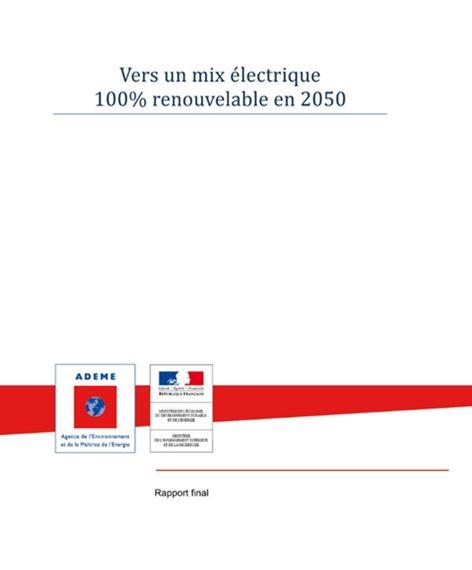
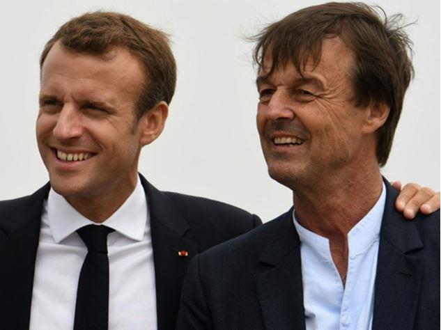
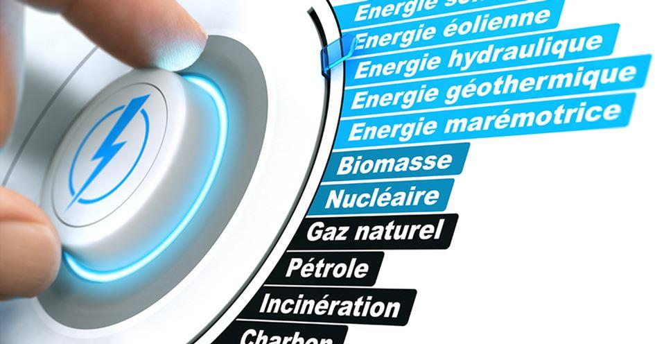
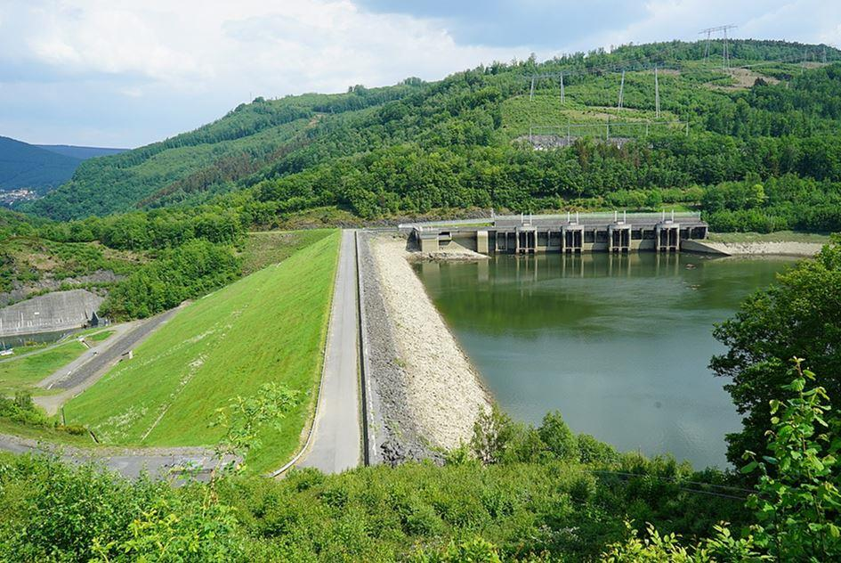

Les jugements péremptoires, à défaut d’être pertinent, portés sur l’évolution du secteur énergétique par des propagandistes « verts », surtout antinucléaires, confondent (volontairement ?) « énergie produite » avec « puissance installée », et surtout « production moyenne » avec « production adaptée en permanence à la demande ».
Vers un mix 100 % renouvelable en 2050 ?
La capacité des « Verts » à appréhender les enjeux sociaux et financiers d’une nation est douteuse, mais ils ont une influence certaine dans les sphères du pouvoir politique et médiatique car ils savent communiquer.
Et en politique, le pouvoir ne se mesure pas en nombre de divisions, mais en capacité de nuisance dans les médias et dans l’opinion publique.
Ainsi, les médias avaient accordé une grande publicité au rapport de l’ADEME intitulé « Vers un mix 100% renouvelable en 2050 » publié en juin 2016 et payé 294 000 euros 1 par les contribuables.
Certes, il parait structuré, argumenté, savant même.
Mais combien de nos concitoyens ont-ils lu les 110 pages de ce texte ? Combien en ont compris les subtilités et en ont vu les erreurs, voire les absurdités ?
L’important était le titre percutant qui pouvait laisser croire que 100% d’énergies renouvelables en 2050 était envisageable et même possible.
Toutes les hypothèses et les affirmations contenues dans cette étude vont dans le sens préétabli par les commanditaires antinucléaires et partisans des énergies renouvelables. Des scénarios optimistes, des rendements négligés, et des sous-estimations financières notamment dans les stockages d’énergie, truffent ce document dont les démonstrations apparemment logiques renferment des failles, parfois bien cachées, qui conduisent à des conclusions absurdes.
Dans toute démocratie, les domaines techniques sont difficiles à faire comprendre au plus grand nombre… et aux élus. Pour être compris, il faut avoir recours à des analogies et simplifier. Et il est plus facile, pour un élu, de proposer du vent et du soleil (« sea, sex and sun » chantait Gainsbourg) que d’expliquer aux électeurs pourquoi le nucléaire, si « compliqué » est leur avenir.
« Ayons foi dans les énergies renouvelables ! » a même déclaré Nicolas Hulot à l’assemblée nationale 2 le 22 février 2018. La foi soulève peut-être des montagnes mais il est douteux qu’elle produise un jour de l’électricité, surtout en fonction du besoin, notamment les soirs d’hiver sans vent.
Le gigantisme des chiffres du rapport précité de l’ADEME est impressionnant. Il faudrait installer environ 50.000 éoliennes terrestres de plus de 150 mètres de haut en 2050 (« au minimum 96 gigawatts (GW)) ». Fin 2020, il y en a déjà près de 10.000 !
Chacun peut imaginer ce que deviendraient nos régions et nos côtes encombrées par cette multitude d’éoliennes dont la production excédentaire devra être écrêtée (perdue) les jours de vent, et qui pourtant ne produiront quasiment plus rien s’il n’y en a pas.
Les connaisseurs apprécieront le facteur de charge optimiste attendue de 32% dans ce rapport, alors qu’il n’est que de 22 % en France depuis des années. Le vent soufflera certainement davantage à partir de 2030… Le changement climatique sans doute ?
Actuellement, ces moulins des temps modernes poussent remarquablement bien, et de façon anarchique, partout où l’on arrose les intéressés, et quelques élus… auxquels la justice s’intéresse 3.
Le nombre prévu de STEP (Stations de Transfert d’Energie par Pompage), permettant de disposer de réserves pour correspondre à la demande parait particulièrement utopique dans ce rapport.
Ce procédé constitue aujourd’hui la meilleure façon de stocker massivement l’électricité pour pallier l’absence de vent et de soleil (à moins d’avoir discrètement recours à des turbines à gaz).
La France dispose principalement, de trois STEP importantes (Revins, Montézic et Grand’Maison). Mais où trouver les emplacements ad hoc pour aménager des équipements supplémentaires ? Chaque STEP nécessite deux réservoirs grands comme des lacs.

Barrages Marquisades et Whitaker de Revin
Et, surtout, comment serait-il seulement possible de les réaliser ? Non seulement il faudra tenir compte des contraintes géographiques (où les implanter ?) et physiques (il faut un dénivelé important), mais aussi sociales… après la contestation engendrée par la construction de la petite retenue d’eau de Sivens.
Un peu de cohérence serait bienvenu
Un peu de cohérence serait bienvenu, même lorsqu’il est question d’écologie.
Notre pays a déjà effectué sa transition énergétique il y a plus de 40 ans, au cours des années 1970, pour consommer moins de pétrole, de charbon et de gaz (et donc émettre moins de gaz à effet de serre) grâce à son “virage nucléaire“. Notre économie a pu en bénéficier, et aucun accident majeur n’a affecté quarante années d’exploitation. Certains détracteurs de ce moyen de production semblent le regretter. Cela apporterait de l’eau à leur moulin (ou du vent dans leurs éoliennes).
Une sortie, même partielle, du nucléaire :
- priverait les Français d’une source de production massive d’électricité à bon marché,
- diminuerait les compétences nécessaires à la sécurité des centrales restantes,
- aurait de graves conséquences économiques et sociales.
La plus grave catastrophe nucléaire serait son arrêt
Paradoxalement, en France, la plus grave catastrophe nucléaire serait son arrêt, même partiel. Les Français doivent s’en rendre compte avant qu’il ne soit trop tard et les hommes politiques devraient le clamer haut et fort.
Mais avant tout, ils devraient se poser la seule question qui vaille : à quoi servent 4 les énergies renouvelables puisque nous produisons suffisamment d’électricité (nous exportons même 10% de notre production) et qu’elles ne contribuent pas à diminuer les émissions de gaz à effet de serre ? Mais peut-être attendent-ils que leurs électeurs leur suggèrent de s’interroger ?
Partager cette page